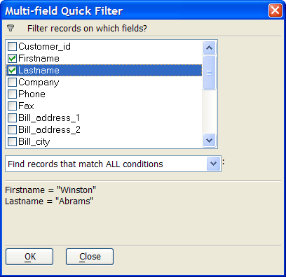

Multi Field Quick Filter Dialog Box
Check the boxes to the left of the fields you want to use in the filter.
Make a selection from the lower list box. The options are:
- "Find records that match ALL conditions"
- "Find records that match ANY condition"
- "Exclude records that match ALL conditions"
- "Exclude records that match ANY condition"
Click OK to run the query.
Click Close to continue.
